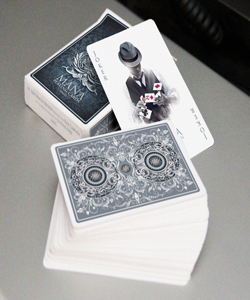
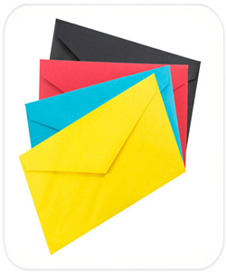
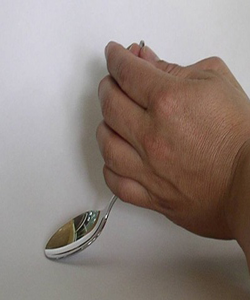
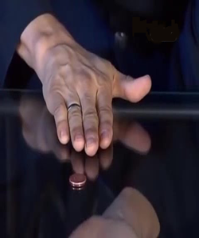
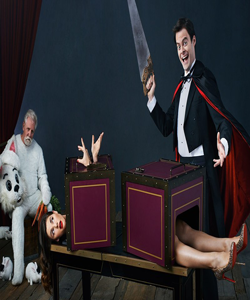
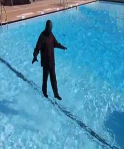
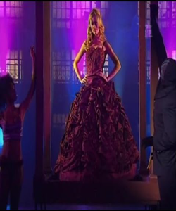
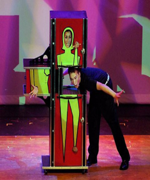
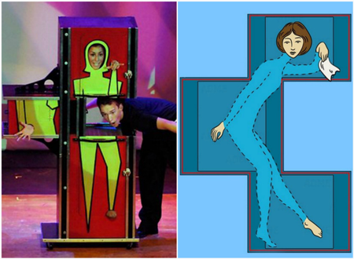
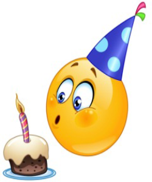

The secret of magic
Фокусы для начинающих
Восхитительный фокус
Вам же нужно эффектно полистать колоду и достать загаданную карту.В чем же секрет? Все просто - эта карта всегда будет 19-ой!
Вам же нужно эффектно полистать колоду и достать загаданную карту.В чем же секрет? Все просто $#8212 по законам математики эта карта всегда будет 19-ой!
Все дело в конверте!
Конверт заранее прорезан в двух местах, но не насквозь. С лицевой стороны конверта этого видно не будет. Через эти отверстия и продевается цветная бумага. Ее средняя часть при этом остается снаружи, а не внутри конверта. При разрезании ножницы пройдут между конвертом и листком. Поэтому он и останется целым. Показывая фокус, держите конверт прорезями к себе.
Конверт заранее прорезан в двух местах, но не насквозь. С лицевой стороны конверта этого видно не будет. Через эти отверстия и продевается цветная бумага. Ее средняя часть при этом остается снаружи, а не внутри конверта. При разрезании ножницы пройдут между конвертом и листком. Поэтому он и останется целым. Показывая фокус, держите конверт прорезями к себе.
Сгибание ложки
Тут используется способ, основанный на обмане зрения. Для него вам не понадобится ничего, кроме обычной металлической ложки и небольшой монеты схожего цвета. Перед тем, как согнуть ложку, зажмите в той же руке монету таким образом, чтобы зрителям был виден лишь ее край. Она должна будет играть роль обманного маневра, заставляя людей думать, будто бы они видят кончик ручки. Теперь все зависит от вашей артистичности и способности на секунду отвлечь внимание публики от ваших рук. Ваша главная задача – быстро нажать на углубление ложки второй рукой или же придавить ее к столешнице, в то же время изменяя наклон монеты так, чтобы сохранялось впечатление целой ложки. Когда же вы это сделали, осторожно спрячьте монету в ладонь и начинайте медленно расслаблять пальцы. Со стороны будет казаться, что плотный столовый прибор, повинуясь вашему мысленному приказу, сам собой изгибается у вас в руке.
Перед тем, как согнуть ложку, зажмите в той же руке монету таким образом, чтобы зрителям был виден лишь ее край. Она должна будет играть роль обманного маневра, заставляя людей думать, будто бы они видят кончик ручки. Нажмите на ложку делая вид, что ее сгибаете и переведите монету на соответствующее положение, далее накрывая второй рукой спрячьте монету и покажите ложку.
Монета сквозь стекло
Как Вы уже могли догадаться, на самом деле есть две идентичные монеты. Условие подбора монет только одно — они должны быть исполнены из металла, который притягивается магнитом. У фокусника на руке, которая находится сверху, есть кольцо, к которому крепится магнит. Итак, одна монета лежит на столе, вторая же спрятана в ладони под столом и, когда фокусник кладет руку с магнитом на край стола, нижняя спрятанная монета притягивается. Теперь фокусник проводит по стеклу стола, накрывая верхнюю монету, и в тот же момент протягивает под стеклом накрытую ладонью нижнюю. Дальше фокусник просто убирает руку, и верхняя монета остается в руке, а нижняя падает в ладонь другой руки.
У фокусника на руке есть кольцо, к которому крепится магнит. Одна монета лежит на столе, вторая же спрятана в ладони под столом и, когда фокусник кладет руку с магнитом на край стола, нижняя спрятанная монета притягивается. Фокусник проводит по стеклу стола, накрывая верхнюю монету, и протягивает под стеклом накрытую ладонью нижнюю.
Профессиональные фокусы
Распиливание человека
Хождение по воде
Все просто — на дне бассейна установлены тумбы из прозрачного плексигласа, высота которых чуть ниже поверхности воды. Сложная инженерная конструкция делает фокус крутым, но, по большому счету, только для демонстрации в видео формате, его часто применяют в кино. Стоит немного изменить угол зрения — и конструкция станет видна даже издали.
Все просто — на дне бассейна установлены тумбы из прозрачного плексигласа, высота которых чуть ниже поверхности воды. Сложная инженерная конструкция делает фокус крутым, но, по большому счету, только для демонстрации в видео формате, его часто применяют в кино. Стоит немного изменить угол зрения — и конструкция станет видна даже издали.
Телепортация красотки
Секрет фокуса в платье ассистентки, оно с кринолинном. Иллюзионист и его ассистентки берутся за шнуры, свисающие с крыши конструкции, и опускают шторы, прикрыв девушку внутри до пояса. В поясе девушки скрыты материалом четыре крюка, за которые она быстро цепляет веревки внутри конструкции. Покачивая юбку, девушка делает вид, что всё еще внутри. На самом деле, как только кринолин полностью удерживается канатами, девушка выбирается через заднюю его часть и спускается вниз. В это время ассистентка опускает зеркало под конструкцией, чтобы ног девушки не было видно в зале. Маг опускает шторы вниз, и девушка перебирается в полость под лестницей. Её отвозят за кулисы и шторы открываются. Девушка появляется перед зрителями в другом месте
Секрет фокуса в платье ассистентки, оно с кринолином. Иллюзионист и его ассистентки берутся за шнуры, свисающие с крыши конструкции, и опускают шторы, прикрыв девушку внутри до пояса. После этого девушке крепит за крюки веревки внутри конструкции и выбирается через заднюю дверь и опускает зеркало, под конструкцией и девушка перебирается под лестницу и перебегает на другое место.
Девушка зигзаг
Когда ассистентка находится в шкафу, она прижимается к стенке шкафа. Лезвия уже, чем ручка, поэтому у зрителей создается ощущение, что свободного места в шкафу не остается. Когда средняя секция отодвигается, часть стены черного цвета не видна зрителю, а именно там и находится тело девушки.
Когда ассистентка находится в шкафу, она прижимается к стенке шкафа. Лезвия уже, чем ручка, поэтому у зрителей создается ощущение, что свободного места в шкафу не остается.
День Рождения
Возьмите День своего рождения умножьте на два. К результату прибавьте пять. Полученный результат умножьте на пятьдесят и прибавьте номер месяца, в котором вы родились.
От полученного результата вам просто надо отнять 250 и поделите на 100.
От полученного результата вам просто надо отнять 250 и поделите на 100.